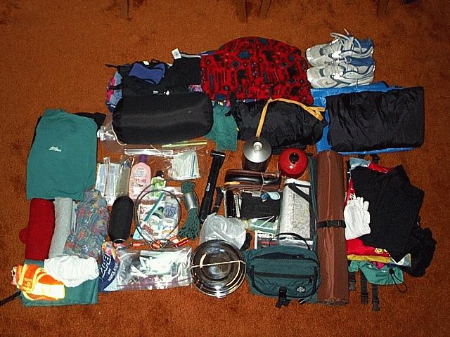
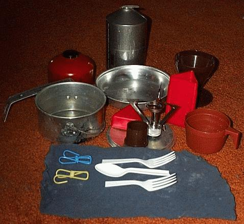

| Decisions, Decisions | ||
|
The Gear & Clothes Ready to Pack  The Cook Set  |
Madison, WI The touring cyclist faces their biggest challenge long before they set a foot on a pedal. Deciding on a route and a schedule is one thing but deciding what to bring and what to leave at home -- that's a challenge. My decisions fall into the usual three categories. First there's the easy decisions that require little or no thought. An example of a decision in this category is deciding to bring the bike. Next there's the decisions that require significant thought. For me I took my time deciding which tools to bring. In the end the Park multi-tool did not pass muster. It turned out to be heavier than the standard tools and harder to actually use. The final category of decisions is defined by all of those items that I will later regret either having taken or left behind. I expect there a several. A leading candidate in this category is the decision to bring the computer. Add to this the decision to bring a cook set and boom I've just added 7 to 9 pounds to the load. However, I will say, that the cook set is really cool. Weight is, in the case of the cook set, the price of freedom. It will allow me many more choices on when and where I take my meals. In contrast, the computer is like an anchor. Having it will obligate me to connect to the Internet from time to time. It is a truly stupid idea to carry a few pounds of the greatest "time taking" device ever invented on any vacation let a lone a bicycle tour. Still, I like to play with it. I'm still amazed that such a thing is even possible. -joe
|
|
|